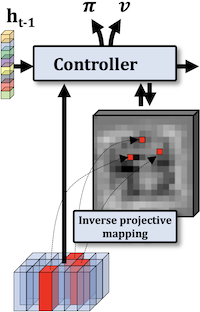

|

|

|

|

|
|  |

|

|

|

|

|

|

|

|

|

|
|
Christian WOLF is associate professor (Maître de Conférences, HDR) at INSA de Lyon and LIRIS, a CNRS laboratory, since sept. 2005. He is interested in machine learning and computer vision, especially large-scale learning of the capacity to perform high-level reasoning from visual observations, and more recently the connections between machine learning and control. He is the head of the AI chair / chair in Artificial Intelligence at INSA-Lyon, and the national coordinator of project ANR Delicio "Data and Prior, Machine Learning and Control" (2019-2023). He is a member of the directing committee of GDR ISIS and co-leader of it's topic "Machine Learning"; co-leader of the topic "Machine Learning and Robotics" at GDR Robotique; member of the scientific committee of GDR IA; member of the board of AI experts at the French national supercomputing cluster GENCI; member of evaluation ANR committee "Artificial Intelligence" from 2019-2021. He has supervised 13 defended PhD theses, is an associate editor of IEEE-T on PAMI and area chair of CVPR 2020, NeurIPS 2020, ICLR 2021, ICCV 2021, ICML 2021, NeurIPS 2021, ICML 2022. He received his MSc in computer science from TU Vienna, Austria, in 2000, and a PhD in computer science from INSA de Lyon, France, in 2003. In 2012 he obtained the habilitation diploma, also from INSA de Lyon. Between September 2017 and August 2019 he was on leave at INRIA, at the chroma work group at the CITI laboratory. |
Blog/Medium: @chriswolfvision
Research interests:
- Machine Learning, Deep Learning, AI: trying to make machines learn to reason
- Computer Vision and understanding humans
- Robotics and learning to control

The group in October 2021 at our "ML + Control workshop": Steeven Janny, Edward Beeching, Théo Jaunet, Quentin Possamaï, Pierre Marza, Assem Sadek, Olivier Serris, Guillaume Bono, Aurélien Bénéteau, Corentin Kervadec (not shown). [The group in feb. 2020].
![[The group in feb. 2020]](miscphotos/wolfpack_feb2020.jpg){kind=link}
Recent news ( All publications | Google citations page )
- 08.12.2021: Paper accepted at the AAAI 2022 Workshop on RL for games: "Godot Reinforcement Learning Agents", work by E. Beeching et al., [arxiv].
- 30.11.2021: New paper: "An in-depth experimental study of sensor usage and visual reasoning of robots navigating in real environments", work by A. Sadek et al. [arxiv].
- 25.11.2020: I am outstanding BMVC 2021 reviewer.
- 28.09.2021: NeurIPS 2021 paper accepted: "Supervising the Transfer of Reasoning Patterns in VQA" [arxiv].
- 27.07.2021: CDC 2021 paper accepted: "Deep KKL: Data-driven Output Prediction for Non-Linear Systems", work by Steeven Janny, [arxiv].
- 16.07.2021: VIS 2021 paper accepted (journal published in IEEE-T on Visualization and Computer Graphics): "VisQA: X-raying Vision and Language Reasoning in Transformers"; work by Théo Jaunet, [arxiv].
- 30.06.2021: New paper: "Universal Domain Adaptation in Ordinal Regression" [arxiv].
- 20.06.2021: My student Pierre Marza won the Multi Object Navigation Challenge at CVPR 2021! [arxiv].
- 19.05.2021: I am outstanding CVPR 2021 reviewer.
- 07.04.2021: Fabien Baradel, former PhD student at our group, received the runner-up (2nd place) thesis prize by AFRIF (French association of pattern recognition). Congrats! [Prize-page].
- 28.01.2021: 3 papers accepted at CVPR 2021:
- "How Transferrable are Reasoning Patterns in VQA?" [open-review].
- "Roses Are Red, Violets Are Blue... but Should Vqa Expect Them To?" [arxiv].
- "SSTVOS: Sparse Spatiotemporal Transformers for Video Object Segmentation" [arxiv].
- 24.09.2020: Paper accepted at Vis 2020 workshop on Visualization for AI Explainability (work by T. Jaunet): [Visualization submission link]
- 28.08.2020: I am outstanding BMVC 2020 reviewer.
- 16.07.2020: CDC 2020 paper accepted: "Data-driven multi-model control for a waste heat recovery system" [IEEE].
- 02.07.2020: ECCV 2020 paper accepted: "Learning to plan with uncertain topological maps" [arxiv].
- 11.06.2020: New paper: "Estimating semantic structure for the VQA answer space" [arxiv].
- 05.06.2020: ECML-PKDD paper accepted: "EgoMap: Projective mapping and structured egocentric memory for Deep RL" [arxiv].
- 11.02.2020: Computer Graphics Forum / Eurovis paper accepted: "DRLViz: Understanding Decisions and Memory in Deep Reinforcement Learning" [arxiv].
- 14.01.2020: ECAI 2020 paper accepted: "Weak Supervision helps Emergence of Word-Object Alignment and improves Vision-Language Tasks" [arxiv].
- 20.12.2019: ICLR 2020 paper accepted: "CoPhy: Counterfactual Learning of Physical Dynamics" [arxiv], [Project + Benchmark data].
- 12.12.2019: My AI Chair position has been accepted, titled: "REMEMBER - Learning Reasoning, Memory and Behavior", which will provide funding for the next years of our research! The chair is co-financed by ANR, Naver Labs Europe and INSA-Lyon. Team members are Olivier Simonin, Jilles Dibangoye, Laetitia Matignon and Boris Chidlovskii.
- 09.12.2019: Journal paper accepted: "Machine Learning-Based Classification of the Health State of Mice Colon in Cancer Study from Confocal Laser Endomicroscopy", Nature Scientifc Reports (Rasti et al).
- 26.11.2019: I joined IEEE-Transactions on PAMI as an Associate Editor.
- 19.11.2019: Journal paper accepted: "An anticipation experiment for plate tectonics", to appear in Tectonics (Gillooly et al).
- 12.07.2019: ANR grant "Delicio" accepted, addressing stable and robust control in complex environments combining machine learning and control theory. Partners:
- LIRIS/INSA-Lyon (Christian Wolf (Project Leader), Laetitia Matignon)
- CITI/INSA-Lyon (Jilles Dibangoye, Olivier Simonin, Ievgen Redko (LHC Laboratory))
- LAGEPP/Lyon 1 University (Madiha Nadri, Vincent Andrieu, Daniele Astolfi Laurent Bako(AMPERE Laboratory), Giacomo Casadei(AMPERE Laboratory))
- Onera (Sylvain Bertrand, Julien Marzat, Hélène Piet-Lahanier)
- 09.06.2019: ECML-PKDD 2019 paper accepted: "Learning 3D Navigation Protocols on Touch Interfaces with Cooperative Multi-Agent Reinforcement Learning" [arxiv].
- 29.05.2019: I am outstanding CVPR 2019 reviewer.
- 10.09.2018: We released complementary mask prediction on VLOG and EPIC KITCHEN datasets (saves ~2 months of calculation on a single GPU).
- 03.07.2018: ECCV 2018 paper accepted: "Object Level Visual Reasoning in Videos" [arxiv].
- 02.07.2018: BMVC 2018 paper accepted: "Human Activity Recognition by attending to RGB frames from deep pose features" [arxiv].
- 29.06.2018: IROS 2018 paper accepted: "Semantic Grid Estimation with a Hybrid Bayesian and Deep Neural Network Approach" (PDF will come soon).
- 19.02.2018: CVPR 2018 paper accepted: "Glimpse Clouds: Human Activity Recognition from Unstructured Feature Points" [arxiv].
- 29.01.2018: FG 2018 paper accepted: "Learning to recognize touch gestures: recurrent vs. convolutional features and dynamic sampling" (arxiv coming) [PDF][arxiv].
- 15.10.2017: CVIU paper accepted: Deep hand pose estimation with semi/weakly-supervised learning; [pdf], [sciencedirect], [arxiv], [video].
- 31.08.2017: SIGGRAPH Asia 2017 (ToG) paper accepted: Interactive Example-Based Terrain Authoring with Conditional Generative Adversarial Networks.
- 16.05.2017: My former PhD student Natalia Neverova won the 2017 French PhD thesis prize of Club EEA/GDR ISIS for work on Deep Learning of Human Motion. Congratulations!
- 01.07.2017: BMVC 2017 paper accepted: Residual Conv-Deconv Grid Network for Semantic Segmentation.
- 17.11.2016: New paper out: arxiv:1611.05664 on object localization with fully convolutional networks and context from spatial 2D-LSTMs.
- 01.05.2016: I am outstanding CVPR 2016 reviewer.
- 05.04.2016: IEEE Access paper accepted: learning human identity from motion patterns: ArXiv pre-print 1511.03908.
- 12.02.2016: French-Canadian ANR/NSERC project "Deepvision" has been accepted. It involves 4 partners: LIRIS/INSA-Lyon, LIP6/UPMC, University of Guelph, Simon Fraser University.
- 04.02.2016: PRL 2016 paper accepted: social behavior modeling in face-to face interaction with dynamic Bayesian networks.
- 20.07.2015: IEEE-T-PAMI 2016 paper accepted: multi-modal gesture recognition and a modality dropout learning algorithm for deep models [Video/youtube].
- 16.06.2015: Winners of the CVPR 2015 - OpenCV Vision Challenge (First in category "gesture recognition")
- 09.06.2014: Winners of the ECCV 2014 - Chalearn competition: work of Natalia Neverova on gesture recognition (Results; More in the PAMI paper).
In the press:
- 23.09.2020: in "Libération" on Twitters biased image cropping algorithm [Web]
- 01.11.2019: In "Usine nouvelle" on Deepmind's Starcraft algorithm [Web]
- 19.06.2018: Student Fabien Baradel is interviewed for the "CVPR Daily" online journal [Web][PDF].
- 05.04.2016: In the CNRS journal on automatic authentification of smartphone users with Deep Learning [PDF] [web-version] [english-version]
- 11.03.2016: In "Industrie & Technologies" on AI and Deep Learning [direct link]
- 25.07.2015: In "Le monde" on Deep Learning [direct link][saved-pdf]
- 28.04.2011: In "Usine Nouvelle" on Kinect [pdf]
- 28.01.2011: In "Millenaire 3" on robotics [pdf]
- 10.03.2010: In "Le monde" on video surveillance [pdf]
Current students
PhD Students
- Pierre Marza (11/2020-); (co-supervised with Laetitia Matignon (LIRIS); Olivier Simonin ( INRIA/CITI/INSA-Lyon)).
- Steeven Janny (09/2020-); Deep Learning and physical models (co-supervised with Madiha Nadri (LAGEPP/Univ Lyon 1)).
- Assem Sadek (06/2020-); Situation Awareness with Geometry and Self-Supervised Learning (co-supervised with Boris Chidlovsky (Naver Labs Europe).
- Quentin Possamaï (01/2020-); Stable and robust control with AI and control-theory (co-supervised with Madiha Nadri (LAGEPP/Univ Lyon 1) and Laurent Bako (AMPERE / Ecole Centrale de Lyon).
- Théo Jaunet (10/2018-); Transparency and Explainability of Machine Learning (co-supervised with Romain Vuillemot (LIRIS/Ecole Centrale de Lyon)).
- Edward Beeching (10/2018-); Large-scale automatic learning of autonomous agent behavior with structured deep reinforcement learning (co-supervised with Olivier Simonin and Jilles Dibangoye (both INRIA/CITI/INSA-Lyon)).
Engineer
- Guillaume Bono (11/2020-).
Former students (alumni)
Former PhD Students
- Dr. Corentin Kervadec (10/2018-12/2021); Vision and Language for Scene Comprehension (co-supervised with Moez Baccouche and Grigory Antipov (both Orange Labs R&D)).
- Dr. Fabien Baradel (10/2016-06/2020); Structured Deep Learning for Video Analysis (co-supervised with Julien Mille (LI/INSA Val de Loire)); [pdf-thesis][thesis-prize]; Current position: research scientist at Naver Labs Europe.
- Dr. Quentin Debard (12/2016-05/2020); Learning to collaboratively interact with big touch tables (co-supervised with Stéphane Canu (LITIS/INSA Rouen)).
- Dr. Bastien Moysset (10/2014-05/2018); Document analysis by deep learning (co-supervised with Christopher Kermorvant (A2IA/Teklia)); [pdf-thesis].
- Dr. Damien Fourure (10/2014-12/2017); Learning deep representations of videos (co-supervised with Alain Tremeau, Rémi Emonet, Elisa Fromont, Damien Muselet (all LHC,Saint-Etienne)); [pdf-thesis].
- Dr. Emre Dogan (01/2013-07/2017); Joint recognition of human activities by multiple robots (co-supervised with Atilla Baskurt (LIRIS/INSA-Lyon) and Gönen Eren (Galatasaray University, Istanbul)); [pdf-thesis]
- Dr. Natalia Neverova (10/2012-04/2016); Deep Learning for Human Motion Analysis (co-supervised with Graham W. Taylor ( University of Guelph, Canada)); [pdf-thesis]; [thesis prize]; current position: research lead at Facebook AI Research.
- Dr. Alaeddine Mihoub (1.10.2012-8.10.2015); Attention et communication homme-robot dans des tâches de co-manipulation (co-supervised with Gerard Bailly (Gipsalab, Grenoble)); [pdf-thesis]; current position: assistant professor - college of business and economics at Qassim University.
- Dr. Jiu Mingyuan (01.10.2010-03.04.2014); Spatial information and end-to-end training for visual recognition (co-supervised with Atilla Baskurt (LIRIS/INSA-Lyon)); [pdf-thesis]; current position: assistant professor at Zhengzhou University.
- Dr. Oya Celiktutan (01.01.2011-06.09.2013); Action recognition in videos (co-supervised with Bülent Sankur (Bogazici University, Istanbul)); current position: lecturer in engineering (robotics), Kings College, London, UK.
- Dr. Moez Baccouche (01.10.2009-15.07.2012); Video indexation taking into account human behavior (co-supervised with Frank Mamalet (Orange Labs), Christophe Garcia and Atilla Baskurt (both LIRIS/INSA-Lyon)); [pdf-thesis]; current position: researcher at Orange Labs R&D.
- Dr. Vincent Vidal (01.10.2008-09.12.2011); Remeshing and mesh simplification with probabilistic graphical models (co-supervised with Florent Dupont (LIRIS/University Lyon 1)); current position: assistant professor (MCF) at LIRIS laboratory; [pdf-thesis]
- Dr. Anh-Phuong TA (01.02.2008-26.11.2010); Inexact graph matching and it's application to objet detection and action recognition (co-supervised with Guillaume Lavoué and Atilla Baskurt (both LIRIS/INSA-Lyon)); [pdf-thesis]
Contractual researcher
- Tom Gillooly (12/2018-); Learning Robot navigation through language (co-supervised with Julien Mille and Cordelia Schmid).
Former post-doctoral Students
- Dr. Rizwan Khan (12/2013-11/2014); Semantic labelling of HD videos taken from occulometric eye-glasses (co-supervised with Julien Mille)
Ongoing research projects
- I hold the AI Chair in research and teaching "REMEMBER - Learning Reasoning, Memory and Behavior" at INSA-Lyon, co-financed by ANR, Naver Labs Europe and INSA-Lyon. Team members are Olivier Simonin, Jilles Dibangoye, Laetitia Matignon and Boris Chidlovskii.
-
I am the project leader of ANR project "DeLiCo" (stable and robust control in complex environments combining machine learning and control theory), involving 4 partners:
- LIRIS/INSA-Lyon (Christian Wolf, Laetitia Matignon)
- CITI/INSA-Lyon (Jilles Dibangoye, Olivier Simonin, Ievgen Redko (LHC Laboratory))
- LAGEPP/Lyon 1 University (Madiha Nadri, Vincent Andrieu, Daniele Astolfi Laurent Bako(AMPERE Laboratory), Giacomo Casadei(AMPERE Laboratory))
- Onera (Sylvain Bertrand, Julien Marzat, Hélène Piet-Lahanier)
Completed research projects
-
I was the French leader for French-Canadian ANR/NSERC project "Deepvision", involving 4 partners:
- LIRIS/INSA-Lyon (Christian Wolf - French Leader; Julien Mille)
- LIP6/UPMC (Matthieu Cord, Nicolas Thome)
- University of Guelph (Graham W. Taylor; Canadian leader)
- Simon Fraser University (Greg Mori)
- ANR blanc "Solstice"; graphes and structured models for computer vision (2014 - 2018).
- Investissements d'Avenir: "INTERABOT"; gesture and object recognition in mobile robotics environment (5/2012-5/2016; leader of "INSA" partner).
- Labex IMU "RIVIERE"; semantic labeling of HD videos acquire from portable eyetracking glasses (2013 - 2015).
- BQR INSA "CROME"; Multi-view multi-robot scene understanding and fleet coordination (2014 - 2016).
- ANR Canada (2007-2010) - Comportements Anormaux : Analyse, Détection, Alerte; ; leader of "INSA" partner.
- ANR Madras (2008-2011) - 3D Models And Dynamic models Representation And Segmentation
- ANR Sattic (2007-2011) - Strings and Trees for Thumbnail Images Classification.
Responsibilities (National, French)
- 2017-now: Membre du comité de direction du GDR ISIS (Information Signal Image Vision) du CNRS
- 2016-now: Membre du comité d'animation du GDR Intelligence Artificielle du CNRS
- 2018-now: Co-animation du GT "Apprentissage et Robotique" du GDR Robotique du CNRS
- 2019/2020: Membre du comité d'évaluation CES 23 de l'ANR (Intelligence artificielle)
- 2016-2018: Membre du comité d'évaluation CES 33 de l'ANR (Robotique et Interactions, 2 ans)
- 2021-now: Membre elu du conseil du laboratoire LIRIS
- 2017-2020: Membre elu du conseil de la Fédération Informatique de Lyon
- 2009-2017: Responsable de l'enseignement de l'informatique en deuxième année au premier cycle de l'INSA de Lyon
Responsibilities (International)
- Associate editor for IEEE-Transactions on Pattern Analysis and Machine Intelligence (PAMI)
- List of PhD and HDR defense committees
Recent committee participations (area chair, reviewer)
- Reviewer for CVPR 2022.
- Area chair for ICLR 2021, ICCV 2021, ICML 2021, NeurIPS 2021.
- Reviewer for CVPR 2021, BMVC 2021.
- Area chair for NeurIPS 2020 and CVPR 2020.
- Reviewer for ICLR 2020, ECCV 2020, BMVC 2020 (outstanding reviewer).
- Area chair for FG 2019
- Reviewer for CVPR 2019 (outstanding reviewer), ICLR 2019, ICML 2019, NeurIPS 2019, BMVC 2019, ECML-PKDD 2019.
- PC member for IJCAI 2018, CVPR 2018 Workshop on Human Pose, Motion, Activities and Shape in 3D, ECCV 2018 Workshop on Hands in Action, RFIAP 2018.
- Reviewer for CVPR 2018, NIPS 2018, ICLR 2018, ICML 2018, IJCAI 2018, BMVC 2018
- PC member of BMVC 2017, ICCV 2017 Workshop on hands in action, ICDAR 2017, CAIP 2017 and CAIP 2015
- Reviewer for CVPR 2017, ICCV 2017, NIPS 2017, ICLR 2017
- PC member of UHA3DS’16"
- Reviewer for CVPR 2016 (outstanding reviewer), ECCV 2016, NIPS 2016
- Reviewer for CVPR 2015 and ICCV 2015
- PC member of CVPR 2016, 2015 and 2014 - Deep Vision Workshop
- PC member of CVPR 2015 ChaLearn workshop on Looking at people, FG 2015 - Human activities workshop.
- Area chair for AVSS 2014 and AVSS 2013
- PC member of ICMI 2014
Miscellaneous:
- My most important contribution
- Passion (other then ML/AI/CV)
- A short list of some journal impact factors
- My personal computing history
- Blue tiger
- My Erdös-Number is 4 (compute yours), through Bülent Sankur:
Christian Wolf = 4
Bülent Sankur = 3
C. Sinan Güntürk = 2
Melvyn B. Nathanson = 1
Paul Erdös = 0Contact:
Email: christian.wolf (at) insa-lyon.fr
Tel: +33 4 72 43 63 08Christian Wolf
INSA de Lyon
Laboratoire LIRIS
Batiment Blaise Pascal
20 av. Albert Einstein
69621 VilleurbanneWhen your only tool is a hammer, every problem looks like a nail